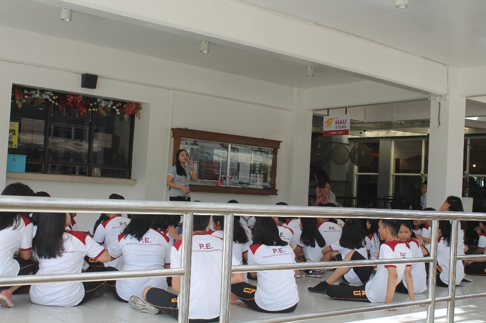
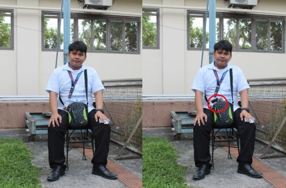
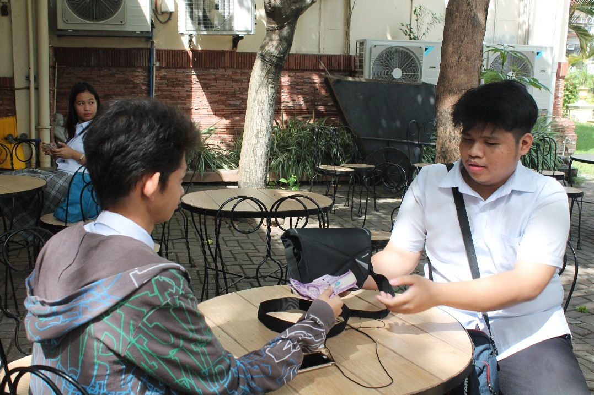
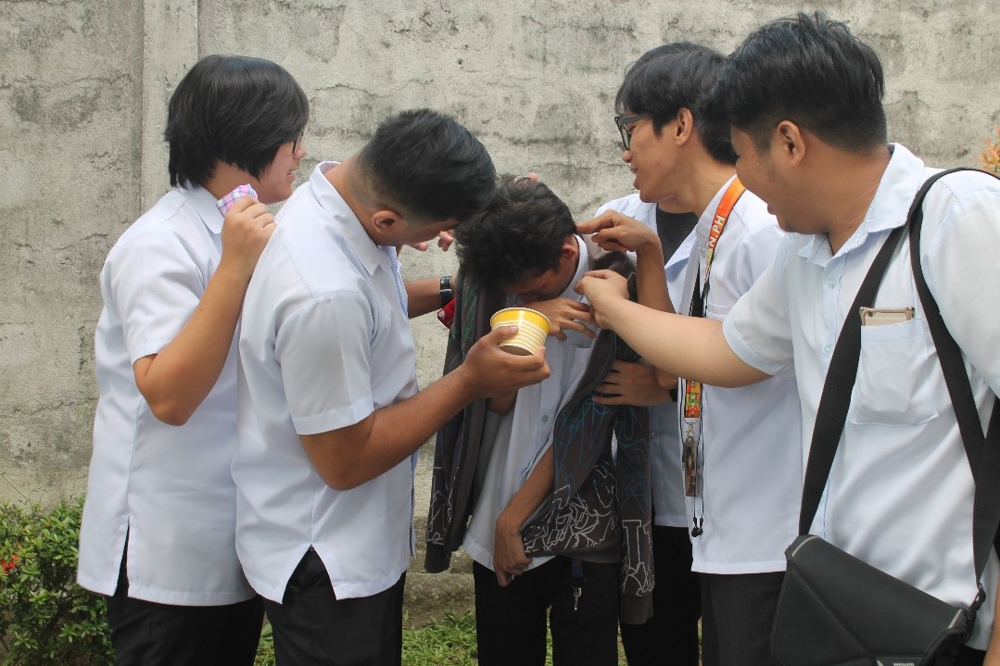

Photojournalism based on Code of Ethics of NPPA
ETHICS #1: Be accurate and comprehensive in the representation of subjects.
This photo shows that these students drink water in a drinking fountain.
ETHICS #1: Be accurate and comprehensive in the representation of subjects.
This photo shows that these students drink water in a drinking fountain.
ETHICS #2: Resist being manipulated by staged photo opportunities.

This is an actual photo that shows student taking P.E class.
ETHICS #3: Be complete and provide context when photographing or recording subjects. Avoid stereotyping
individuals and groups. Recognize and work to avoid presenting one's own biases in the work.

This photo the owner doesn’t know that we used his photo for this activity
ETHICS #4: Treat all subjects with respect and dignity. Give special consideration to vulnerable subjects and compassion to victims
of crime or tragedy. Intrude on private moments of grief only when the public has an overriding and justifiable need to see.
The plate number of the cars are blurred due to privacy.
ETHICS #5: While photographing subjects do not intentionally contribute to, alter, or seek to alter or influence events.
In this picture the subjects don’t know that they captured.
ETHICS #6: Editing should maintain the integrity of the photographic images' content and context. Do not manipulate
images or add or alter sound in any way that can mislead viewers or misrepresent subjects.

The actual image and the edited image.
ETHICS #7: Do not pay sources or subjects or reward them materially for information or participation.
He pays for the nudes photo of his classmate.
ETHICS #8: Do not accept gifts, favors, or compensation from those who might seek to influence coverage.

He ordered to take photo of the girls in campus in exchange for money.
ETHICS #9: Do not intentionally sabotage the efforts of other journalists.
The man with the school uniform getting information about the pictures of his friend to copy it or get an idea to it.
ETHICS #10: Do not engage in harassing behavior of colleagues, subordinates or subjects and maintain
the highest standards of behavior in all professional interactions.

This photo shows harassing behavior to a classmate to get what they want.